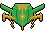
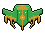
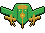
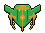

Category
Bosses
A boss arrives every 2:00, 4 per run. Each planet has its own.
How boss fights work
- A warning with the boss's name plays just before it arrives. No regular waves come while it's on screen.
- Bosses have 3 phases. Each time a third of its health is gone, every bullet on screen is cleared and the boss switches to a new attack.
- Its health bar and name show under the timer.
- Beat it within 45 seconds or it escapes. "Escaping in..." counts down for the last 10 seconds, and an escaped boss drops nothing.
- A beaten boss explodes in slow motion and drops a cache (an evolution, or a set of cards) and a repair. Every pickup on screen flies to you.
| Boss | Planet | Arrives | HP | Attacks by phase | |
|---|---|---|---|---|---|
 | Hive Mother | Earth | 2:00 | 625 | Aimed fans and slow rings / Rotating rings and sniper shots / A flower of two spirals turning opposite ways |
 | Thornback | Earth | 4:00 | 1200 | A three-arm spiral and heavy triples / Bullet rain / Bursts of three wide fans and a slow heavy ring |
 | Brood Carrier | Earth | 6:00 | 1925 | Rotating rings and sniper shots / A flower of two spirals turning opposite ways / Aimed fans and slow rings |
 | Verdant Maw | Earth | 8:00 | 2800 | Bullet rain / Bursts of three wide fans and a slow heavy ring / A three-arm spiral and heavy triples |
 | Frost Warden | Europa | 2:00 | 625 | Aimed fans and slow rings / Rotating rings and sniper shots / A flower of two spirals turning opposite ways |
 | Rime Lord | Europa | 4:00 | 1200 | A three-arm spiral and heavy triples / Bullet rain / Bursts of three wide fans and a slow heavy ring |
 | Glacier Eye | Europa | 6:00 | 1925 | Rotating rings and sniper shots / A flower of two spirals turning opposite ways / Aimed fans and slow rings |
 | Cryo Leviathan | Europa | 8:00 | 2800 | Bullet rain / Bursts of three wide fans and a slow heavy ring / A three-arm spiral and heavy triples |
 | Dust Baron | Mars | 2:00 | 625 | Aimed fans and slow rings / Rotating rings and sniper shots / A flower of two spirals turning opposite ways |
 | Red Reaper | Mars | 4:00 | 1200 | A three-arm spiral and heavy triples / Bullet rain / Bursts of three wide fans and a slow heavy ring |
 | Rust Engine | Mars | 6:00 | 1925 | Rotating rings and sniper shots / A flower of two spirals turning opposite ways / Aimed fans and slow rings |
 | Sandstorm | Mars | 8:00 | 2800 | Bullet rain / Bursts of three wide fans and a slow heavy ring / A three-arm spiral and heavy triples |
 | Cinder Tyrant | Mercury | 2:00 | 625 | Aimed fans and slow rings / Rotating rings and sniper shots / A flower of two spirals turning opposite ways |
 | Slag Heart | Mercury | 4:00 | 1200 | A three-arm spiral and heavy triples / Bullet rain / Bursts of three wide fans and a slow heavy ring |
 | Sunforged | Mercury | 6:00 | 1925 | Rotating rings and sniper shots / A flower of two spirals turning opposite ways / Aimed fans and slow rings |
 | Ash Colossus | Mercury | 8:00 | 2800 | Bullet rain / Bursts of three wide fans and a slow heavy ring / A three-arm spiral and heavy triples |